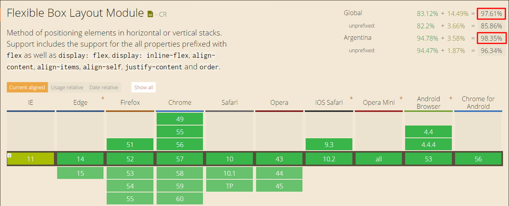

Flex Box Layout
By Santiago Pernigotti
Qué es Flex box?
Un modelo de layout, es decir define cómo se muestran los elementos y cómo se relacionan con el resto.
Presenta una forma sencilla y más eficiente de alinear y distribuir "items" en un contenedor.
Layout modes
- block layout
- inline layout
- table layout
- positioned layout
- flexbox layout
- grid layout (comming soon)
Soporte de navegadores

Qué podemos hacer con flex box?
- Alinear elementos sobre el eje horizontal o vertical
- Alinear los elementos con respecto a sus hermanos
- Redefinir el orden en el que aparecen los elementos
- Definir la orientación en el que van a aparecer los elementos
- Tamaños flexibles para las cajas
- Elementos hermanos con igual alto
- y mucho más...
Que empiece la magia
.flex-container {
display: flex;
}
Definición de ejes y orientación
flex-direction
-
row (default)
- row-reverse
- column
- column-reverse
Alineación sobre el main axis
justify-content
-
flex-start (default)
- flex-end
- center
- space-between
- space-around
Alineación sobre el cross axis
align-items
-
stretch (default)
- flex-start
- flex-end
- center
- baseline